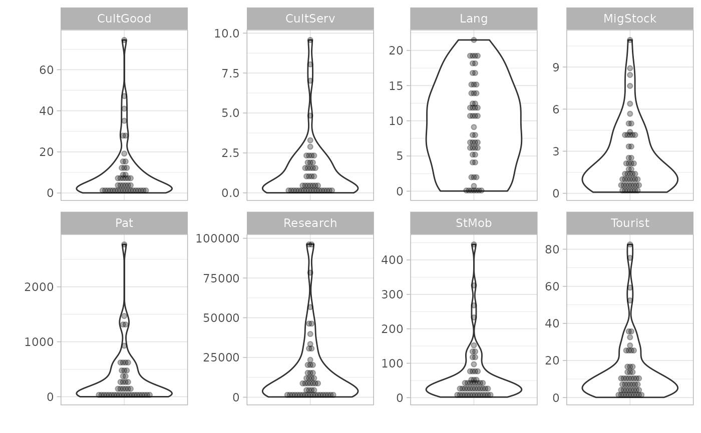

Plots indicator distributions using box plots, dot plots, violin plots, violin-dot plots, and histograms. Supports plotting multiple indicators by calling aggregation groups.
Arguments
- coin
The coin object, or a data frame of indicator data
- dset
The name of the data set to apply the function to, which should be accessible in
.$Data.- iCodes
Indicator code(s) to plot. See details.
- ...
Further arguments passed to
get_data()(other thancoin,dsetandiCodes).- type
The type of plot. Currently supported
"Box","Dot","Violin","Violindot","Histogram".- normalise
Logical: if
TRUE, normalises the data first, usingglobal_specs. IfFALSE(default), data is not normalised.- global_specs
Specifications for normalising data if
normalise = TRUE. This is passed to theglobal_specsargument ofNormalise().
Details
This function uses ggplot2 to generate plots, so the plot can be further manipulated using ggplot2 commands.
See vignette("visualisation) for more details on plotting.
This function replaces the now-defunct plotIndDist() from COINr < v1.0.
Examples
# build example coin
coin <- build_example_coin(up_to = "new_coin")
#> iData checked and OK.
#> iMeta checked and OK.
#> Written data set to .$Data$Raw
# plot all indicators in P2P group
plot_dist(coin, dset = "Raw", iCodes = "P2P", Level = 1, type = "Violindot")
#> Bin width defaults to 1/30 of the range of the data. Pick better value with
#> `binwidth`.
